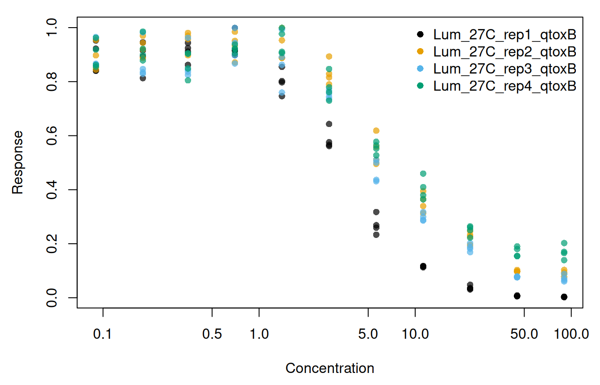
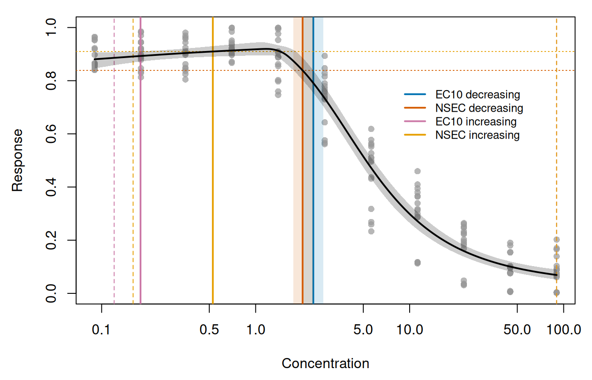
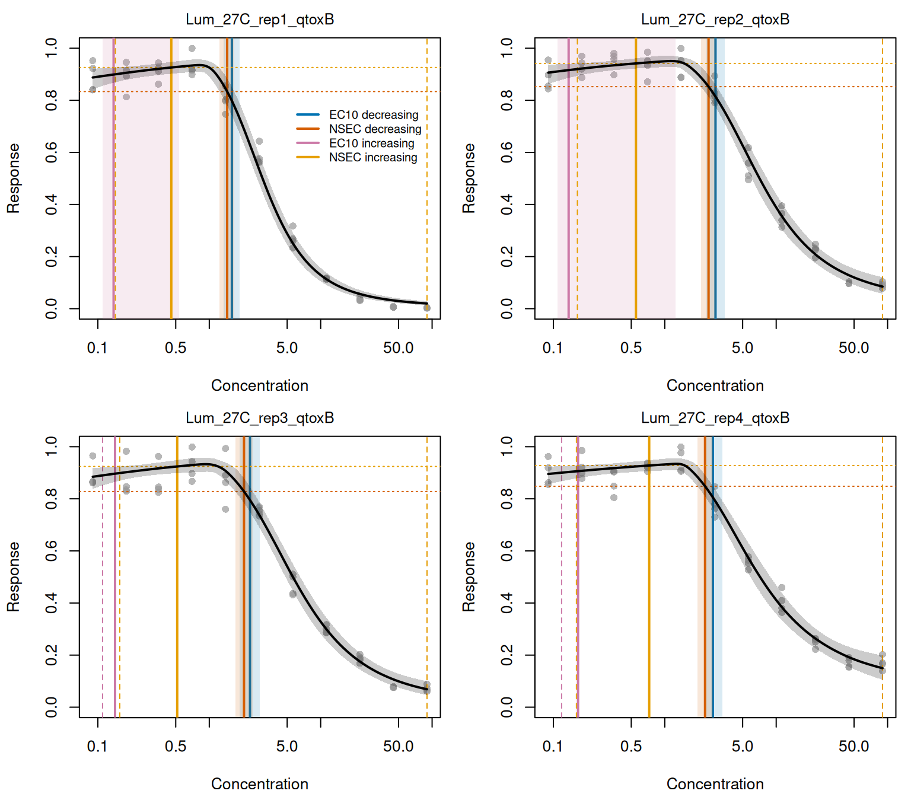
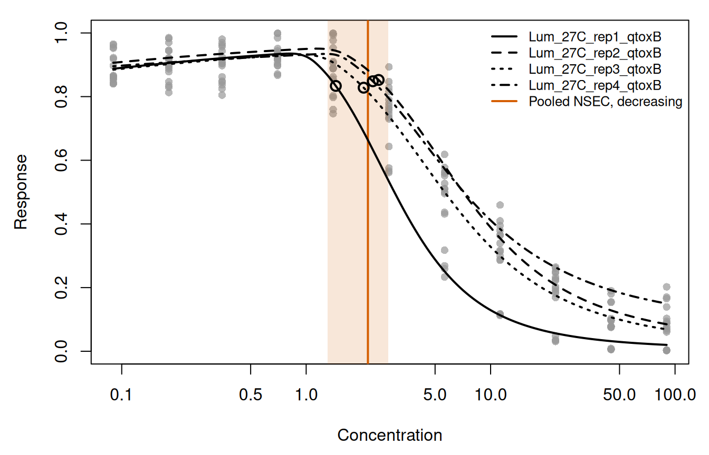
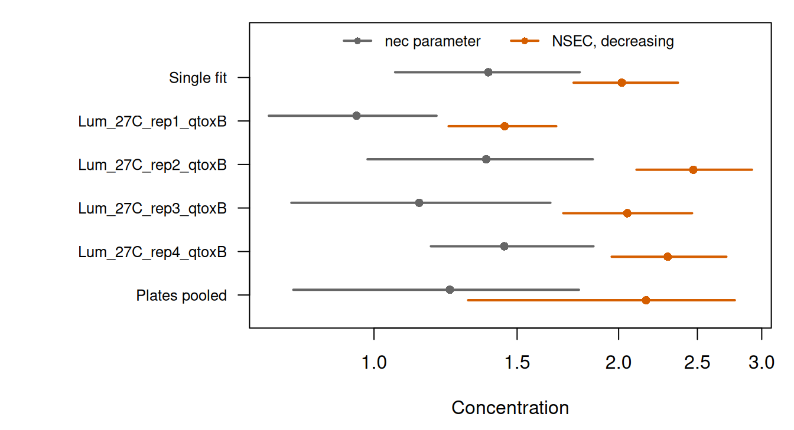

Here we apply ecx() and nsec() to a model fitted with brm() from the brms package, first as a single curve and then with one curve for each level of a factor. The definitions of both estimates are given in the vignettes on the ECx and the NSEC.
The example is a toxicity assay repeated on replicate plates, with the plate as the factor, and the fitted equation includes a hormesis term (an initial rise in the response at low concentrations). The models were fitted in advance by the script data-raw/vignette_fits_brms.R, and the stored fits are read below, so that building the article requires neither Stan nor the time needed for sampling. The software versions are given under Provenance.
The plate replicate assay
The data are from the bioluminescent bacterial toxicity assay of Luter et al. (2025), in which the whole concentration series of one experiment was run on a single plate. The plate was repeated in four experiments with one contaminant, and each plate is a level of the factor plateRep.
fit_single <- readRDS("fits/brms_plate_single.rds")$fit
fit_grouped <- readRDS("fits/brms_plate_grouped.rds")$fit
plates <- fit_grouped$data
head(plates[c("log_x", "plateRep", "y")])
#> log_x plateRep y
#> 1 -2.407946 Lum_27C_rep1_qtoxB 0.8410503
#> 2 -2.407946 Lum_27C_rep1_qtoxB 0.8401287
#> 3 -2.407946 Lum_27C_rep1_qtoxB 0.9221791
#> 4 -2.407946 Lum_27C_rep1_qtoxB 0.9521653
#> 5 -1.714798 Lum_27C_rep1_qtoxB 0.8128610
#> 6 -1.714798 Lum_27C_rep1_qtoxB 0.8927248The data contain 176 observations (4 plates, each with 4 wells at each of 11 concentrations from 0.09 to 90). Concentration is stored as its natural logarithm in log_x, and the response y is a proportion on the open interval (0, 1). Each plate held artificial seawater controls and a series of 1:2 dilutions of the toxicant, each in four wells (Luter et al. 2025). However, the data contain no zero concentration. The lowest concentration (0.09) is half the next (0.18), the ratio between successive dilutions. We therefore take its wells to be the controls, which were given the concentration of one further dilution so that the logarithm is defined. Because x_control defaults to the lowest concentration in the data, the control for all estimates below is the predicted response at 0.09, which is also the start of the prediction grid.
op <- par(mar = c(4.5, 4.5, 1, 1))
plot(
exp(plates$log_x), plates$y,
log = "x", pch = 16, col = adjustcolor(plate_cols[plates$plateRep], 0.7),
xlab = "Concentration", ylab = "Response"
)
legend("topright", legend = plate_levels, col = plate_cols, pch = 16, bty = "n")
par(op)
On each plate the response at the control was near 0.89, and it rose slightly to a peak mean at the third to fifth concentration before declining (Figure 1). The largest response in the data (0.999) was recorded in 4 readings, at the fourth and fifth concentrations, i.e. within that peak. The plates differ at the highest concentration, where the mean of plate Lum_27C_rep1_qtoxB is 0.003, whereas the means of the other three plates are 0.07 to 0.17. The rise before the decline is hormesis, which an equation that can only decline from the control could not follow, so the equation fitted below includes a hormesis term.
The model
We fitted a threshold equation with a hormesis term, written as a nonlinear brms formula. Up to the threshold nec, the predictor is top plus a linear rise in log_x with slope exp(slope). Beyond nec, the difference between that predictor and bot is multiplied by an exponential decay with rate exp(beta), so that the curve falls towards the lower asymptote bot. The family is Beta(), whose default link is the logit, and the whole right-hand side of the formula is therefore on the logit scale.
The single fit estimates one value for each parameter, whereas the grouped fit estimates each parameter separately for each plate (as an intercept, which is the value for the first plate, and the difference of each other plate from it). In the grouped fit, plateRep is therefore a population-level effect on each nonlinear parameter.
We give the priors in full below. For the single fit they are centred on the data, i.e. on a response near 0.88 (logit 2) for top at log_x = 0 (a concentration of 1, which is where top is defined, and not at the control), on a lower asymptote near 0.12 (logit -2) for bot, and on a threshold inside the observed range of log_x for nec. The grouped fit uses these priors for the intercepts, and its plate differences are centred on 0 (no difference between plates). The intercept priors and the difference priors are specified separately because a prior written without coef applies to all coefficients of its parameter.
prior_single <- c(
prior(normal(2, 2), nlpar = "top"),
prior(normal(-2, 2), nlpar = "bot"),
prior(normal(1, 2), nlpar = "nec"),
prior(normal(0, 2), nlpar = "beta"),
prior(normal(-1, 2), nlpar = "slope")
)
prior_grouped <- c(
prior(normal(2, 2), nlpar = "top", coef = "Intercept"),
prior(normal(-2, 2), nlpar = "bot", coef = "Intercept"),
prior(normal(1, 2), nlpar = "nec", coef = "Intercept"),
prior(normal(0, 2), nlpar = "beta", coef = "Intercept"),
prior(normal(-1, 2), nlpar = "slope", coef = "Intercept"),
prior(normal(0, 2), nlpar = "top"),
prior(normal(0, 2), nlpar = "bot"),
prior(normal(0, 1), nlpar = "nec"),
prior(normal(0, 1), nlpar = "beta"),
prior(normal(0, 1), nlpar = "slope")
)The precision parameter phi was given the brms default prior. Both models were fitted with identical sampler settings: 4 chains of 5000 iterations (the first 2500 of each used as warmup), all parameters initialised at 0 and not at random values (init = 0), draws saved for all parameters (save_pars(all = TRUE)), and a fixed seed.
fit_single <- brm(
bf_single, data = plates, family = Beta(), prior = prior_single,
chains = 4, iter = 5000, warmup = 2500, init = 0,
save_pars = save_pars(all = TRUE), seed = 700
)
fit_grouped <- brm(
bf_grouped, data = plates, family = Beta(), prior = prior_grouped,
chains = 4, iter = 5000, warmup = 2500, init = 0,
save_pars = save_pars(all = TRUE), seed = 700
)The stored fits were made by data-raw/vignette_fits_brms.R with these arguments, with the four chains run in parallel and no warmup draws kept.
Each fit contains 10,000 posterior draws, without thinning, and no divergent transitions occurred in either fit. The largest R-hat is 1.002 for the single fit and 1.001 for the grouped fit, and the smallest effective sample sizes (calculated from neff_ratio()) are 2544 and 2751 draws, respectively.
Estimates from the single fit
A brmsfit may have several predictors, and in a nonlinear formula these are mixed with the parameters, so the user must name the predictor with x_var. If x_var is not given, the call is refused:
ecx(fit_single)
#> Error in `toxval_predict.brmsfit()`:
#> ! `x_var` must be supplied for a `brmsfit`.Because the model was fitted on log concentration, we use xform = exp to return each estimate as a concentration. The transformation is applied to each realisation before summarising, so that the median and the interval limits are those of the concentrations. The argument xform is optional, and without it the estimates are returned on the log_x scale.
ecx_single <- ecx(fit_single, x_var = "log_x", xform = exp)
#> Warning: Some realisations have no crossing within the evaluated range, so a reported quantile is at the highest concentration, or have no reference and were excluded. Consider a wider `x_range`.
#> * increasing: 8.1% censored
ecx_single
#> # A tibble: 2 × 10
#> # Model: brmsfit
#> # Settings: resolution 500 | 10000 posterior draws
#> metric direction estimate conf.low conf.high proportion type control
#> <chr> <chr> <dbl> <dbl> <dbl> <dbl> <chr> <dbl>
#> 1 ecx decreasing 2.37 2.04 2.76 0.1 absolute 0.881
#> 2 ecx increasing 0.179 0.121 90.0 0.1 absolute 0.881
#> # ℹ 2 more variables: reference <dbl>, asymptote <dbl>
nsec_single <- nsec(fit_single, x_var = "log_x", xform = exp)
#> Warning: Some realisations have no crossing within the evaluated range, so a reported quantile is at the highest concentration, or have no reference and were excluded. Consider a wider `x_range`.
#> * increasing: 17.9% censored
nsec_single
#> # A tibble: 2 × 14
#> # Model: brmsfit
#> # Settings: resolution 500 | 10000 posterior draws
#> metric direction estimate conf.low conf.high sig_val type anchor control
#> <chr> <chr> <dbl> <dbl> <dbl> <dbl> <chr> <chr> <dbl>
#> 1 nsec decreasing 2.02 1.76 2.37 0.01 absolute model 0.881
#> 2 nsec increasing 0.527 0.160 90.0 0.01 absolute model 0.881
#> # ℹ 5 more variables: reference <dbl>, asymptote <dbl>, ecnsec <dbl>,
#> # ecnsec.low <dbl>, ecnsec.high <dbl>Every argument of this call other than x_var and xform takes its default. Table 1 gives the value of each column of the decreasing row, what it is, and the argument and default that set it. The ecx() result has the same columns, with proportion in place of sig_val and without anchor and ecnsec.
nsec_single, and the setting (the toxval default in each case) from which each value follows.
| Column | Value | Meaning | Set by |
|---|---|---|---|
metric, direction
|
nsec, decreasing | The estimate and the direction of the change. Both directions are always returned. | |
estimate, conf.low, conf.high
|
2.02 (1.76 to 2.37) | The median and 95 per cent interval of the NSEC realisations, after xform. |
prob_vals = c(0.5, 0.025, 0.975) |
sig_val |
0.01 | The quantile of the control realisations that sets the decreasing reference; 1 - sig_val sets the increasing one. |
sig_val = 0.01 |
control |
0.881 | The median predicted response at the control concentration (0.09). |
x_control = NULL: the lowest concentration in the data |
reference |
0.839 | The sig_val quantile of the control realisations. The NSEC is the first concentration at which the curve falls below it. |
sig_val |
type |
absolute | The span that ecnsec is a proportion of: for a decreasing response under "absolute", from the control to 0. |
type = "absolute" |
ecnsec, ecnsec.low, ecnsec.high
|
5 per cent (1 per cent to 7 per cent) | The decline at the NSEC as a proportion of that span, i.e. of the control here. |
type, prob_vals
|
asymptote |
NA | The asymptote that ecnsec is measured to under type = "relative"; NA otherwise. |
type |
anchor |
model | The control the reference is taken from in a model-averaged fit. A brmsfit is one model, so it has no effect here. |
anchor = NULL: "model", except "component" for a bayesmanecfit
|
resolution (in the header) |
500 | The number of concentrations, evenly spaced on the log_x scale from 0.09 to 89.9999999702762, at which each realisation is evaluated. |
resolution = 500; x_range = NULL: the range of the data |
The anchor argument changes the result only for a model-averaged fit, and is shown on one in the bayesnec case study.
To show these estimates against the fitted curve, we predicted the curve with toxval_predict(). Called with the same x_var, it gives the curve from which ecx() and nsec() obtained the estimates above: a matrix of predicted responses, with one row for each posterior draw and one column for each value of the grid x_vec (on the log_x scale). We use two functions for this figure and for the figure of the plates. marks_of() collects the rows of an ecx() and an nsec() result, and plot_fit() draws the data, the posterior median curve with its 95 per cent credible band, each estimate with its interval, and the reference of each NSEC.
est_cols <- c(
"EC10 decreasing" = "#0072B2", "NSEC decreasing" = "#D55E00",
"EC10 increasing" = "#CC79A7", "NSEC increasing" = "#E69F00"
)
marks_of <- function(ecx_tbl, nsec_tbl, level = NULL) {
rows <- function(tbl) if (is.null(level)) tbl else tbl[tbl$group == level, ]
cols <- c("direction", "estimate", "conf.low", "conf.high", "reference")
rbind(
data.frame(metric = "EC10", rows(ecx_tbl)[cols]),
data.frame(metric = "NSEC", rows(nsec_tbl)[cols])
)
}
plot_fit <- function(x_vec, curve, x, y, marks, main = NULL) {
q <- apply(curve, 2, quantile, c(0.5, 0.025, 0.975))
plot(x, y, log = "x", ylim = c(0, 1), pch = 16,
col = adjustcolor("grey60", 0.7), xlab = "Concentration",
ylab = "Response", main = main, cex.main = 0.95, font.main = 1)
for (i in seq_len(nrow(marks))) {
col <- est_cols[[paste(marks$metric[i], marks$direction[i])]]
lim <- c(marks$conf.low[i], marks$conf.high[i])
# An interval that reaches the highest concentration is censored there,
# so draw its limits as dashed lines rather than a band.
if (lim[2] >= max(x)) {
abline(v = lim, col = col, lty = 2)
} else {
rect(lim[1], -1, lim[2], 2, col = adjustcolor(col, 0.15), border = NA)
}
abline(v = marks$estimate[i], col = col, lwd = 2)
if (marks$metric[i] == "NSEC") {
abline(h = marks$reference[i], col = col, lty = 3)
}
}
polygon(exp(c(x_vec, rev(x_vec))), c(q[2, ], rev(q[3, ])),
col = adjustcolor("black", 0.2), border = NA)
lines(exp(x_vec), q[1, ], lwd = 2)
}
pred_single <- toxval_predict(fit_single, x_var = "log_x")
op <- par(mar = c(4.5, 4.5, 1, 1))
plot_fit(pred_single$x_vec, pred_single$curves[[1]],
exp(plates$log_x), plates$y, marks_of(ecx_single, nsec_single))
legend(8, 0.8, legend = names(est_cols), col = est_cols, lwd = 2,
bty = "n", cex = 0.8)
par(op)
The median curve of the single fit peaks at a concentration of 1.18 (Figure 2). In the decreasing direction the EC10 is 2.37 (2.04 to 2.76) (blue), i.e. the concentration on the decline at which the curve falls from the control (0.881) to 0.793 (10 per cent of the way from the control to 0). The decreasing NSEC is 2.02 (1.76 to 2.37) (vermillion), which is below the EC10 because its reference (0.839, the dotted vermillion line) is closer to the control than the EC10 reference. At the NSEC the decline is 5 per cent of the control (Table 1).
For each realisation, ecx() and nsec() take the first concentration at which the curve crosses the reference in the direction of the row, interpolated between grid points. Because the curve first rises above the control, the decreasing references are crossed only on the decline beyond the peak, and the increasing references only on the rise below it. Under type = "absolute" a Beta response is a proportion, so the increasing reference of the EC10 is the control plus 10 per cent of the difference between the control and 1 (0.893). The increasing EC10 is 0.179 (pink), close to the second concentration (0.18), and the increasing NSEC, at which the rise exceeds the 0.99 quantile of the control (0.910, the dotted orange line), is 0.53 (orange). In some realisations the response never rises as far as these references, and the upper limit of both intervals is therefore the highest concentration (90, dashed lines), as the warnings report. How toxval places such realisations is shown in the multivariate brms case study.
Estimates for each plate
With group_var = "plateRep", one curve is predicted, and one estimate returned, for each plate. This requires plateRep to be a population-level effect in the fit (as it is here), because toxval_predict() marginalises over group-level effects. A plate entered only as (1 | plateRep) would give all plates one common curve, and the call would be refused.
ecx_grouped <- ecx(fit_grouped, x_var = "log_x", group_var = "plateRep", xform = exp)
#> Warning: Some realisations have no crossing within the evaluated range, so a reported quantile is at the highest concentration, or have no reference and were excluded. Consider a wider `x_range`.
#> * group Lum_27C_rep3_qtoxB, increasing: 3.1% censored
#> * group Lum_27C_rep4_qtoxB, increasing: 3.6% censored
ecx_grouped[, c("direction", "group", "estimate", "conf.low", "conf.high", "control")]
#> # A tibble: 8 × 6
#> # Model: brmsfit
#> # Settings: resolution 500 | 10000 posterior draws
#> direction group estimate conf.low conf.high control
#> <chr> <fct> <dbl> <dbl> <dbl> <dbl>
#> 1 decreasing Lum_27C_rep1_qtoxB 1.59 1.34 1.87 0.888
#> 2 increasing Lum_27C_rep1_qtoxB 0.138 0.111 0.539 0.888
#> 3 decreasing Lum_27C_rep2_qtoxB 2.85 2.36 3.45 0.906
#> 4 increasing Lum_27C_rep2_qtoxB 0.137 0.108 1.25 0.906
#> 5 decreasing Lum_27C_rep3_qtoxB 2.32 1.88 2.85 0.885
#> 6 increasing Lum_27C_rep3_qtoxB 0.143 0.110 90.0 0.885
#> 7 decreasing Lum_27C_rep4_qtoxB 2.70 2.28 3.28 0.895
#> 8 increasing Lum_27C_rep4_qtoxB 0.167 0.119 90.0 0.895
nsec_grouped <- nsec(
fit_grouped,
x_var = "log_x", group_var = "plateRep", xform = exp, draws = TRUE
)
#> Warning: Some realisations have no crossing within the evaluated range, so a reported quantile is at the highest concentration, or have no reference and were excluded. Consider a wider `x_range`.
#> * group Lum_27C_rep1_qtoxB, increasing: 16.7% censored
#> * group Lum_27C_rep2_qtoxB, increasing: 14.3% censored
#> * group Lum_27C_rep3_qtoxB, increasing: 20.4% censored
#> * group Lum_27C_rep4_qtoxB, increasing: 24.7% censored
nsec_grouped[, c("direction", "group", "estimate", "control", "reference", "ecnsec")]
#> # A tibble: 8 × 6
#> # Model: brmsfit
#> # Settings: resolution 500 | 10000 posterior draws
#> direction group estimate control reference ecnsec
#> <chr> <fct> <dbl> <dbl> <dbl> <dbl>
#> 1 decreasing Lum_27C_rep1_qtoxB 1.45 0.888 0.834 0.0609
#> 2 increasing Lum_27C_rep1_qtoxB 0.456 0.888 0.926 0.342
#> 3 decreasing Lum_27C_rep2_qtoxB 2.47 0.906 0.852 0.0595
#> 4 increasing Lum_27C_rep2_qtoxB 0.552 0.906 0.942 0.377
#> 5 decreasing Lum_27C_rep3_qtoxB 2.05 0.885 0.828 0.0640
#> 6 increasing Lum_27C_rep3_qtoxB 0.516 0.885 0.924 0.343
#> 7 decreasing Lum_27C_rep4_qtoxB 2.30 0.895 0.848 0.0527
#> 8 increasing Lum_27C_rep4_qtoxB 0.725 0.895 0.928 0.311Each plate has its own control, predicted from that plate’s curve at 0.09, and its own reference, the 0.01 (decreasing) or 0.99 (increasing) quantile of that plate’s control realisations. The NSEC of each plate is therefore measured against the variation of its own control. The controls range from 0.885 to 0.906, and the decreasing references from 0.828 to 0.852.
For the grouped fit, toxval_predict() returns one curve for each plate in curves, and the plate of each curve is given in keys$group. Below we draw each plate with its own curve and estimates, using the functions defined above.
pred_grouped <- toxval_predict(fit_grouped, x_var = "log_x", group_var = "plateRep")
op <- par(mfrow = c(2, 2), mar = c(4.2, 4.2, 2, 0.8))
for (i in seq_along(pred_grouped$curves)) {
level <- as.character(pred_grouped$keys$group[i])
in_plate <- plates$plateRep == level
plot_fit(pred_grouped$x_vec, pred_grouped$curves[[i]],
exp(plates$log_x[in_plate]), plates$y[in_plate],
marks_of(ecx_grouped, nsec_grouped, level), main = level)
if (i == 1) {
legend(90, 0.8, xjust = 1, legend = names(est_cols), col = est_cols, lwd = 2,
bty = "n", cex = 0.75)
}
}
par(op)
For plate Lum_27C_rep1_qtoxB the decreasing NSEC is 1.45 (1.24 to 1.68), and its interval is below the intervals of the other three plates, whose estimates are 2.05 to 2.47 (Figure 3). This is the plate whose response falls furthest. At the highest concentration its median curve is 0.020 (against an observed mean of 0.003), whereas the median curves of the other three plates are 0.07 to 0.15. The decreasing EC10 estimates order the plates identically, from 1.59 for plate Lum_27C_rep1_qtoxB to 2.85. At the decreasing NSEC of each plate, the decline (ecnsec) is 5 per cent to 6 per cent of its control. Together with the narrow range of the controls, this suggests that the plates differ in where the decline begins and how far it goes, and not in their response at the control.
The median curves of the plates peak at concentrations of 0.81 to 1.28. As for the single fit, the increasing estimates of each plate are on the rise below that peak and the decreasing estimates on the decline above it. The intervals of the increasing estimates extend to the highest concentration, with the exception of the increasing EC10 of plates Lum_27C_rep1_qtoxB and Lum_27C_rep2_qtoxB. By contrast, the single fit gives one curve for all four plates, and at the highest concentration its median is 0.069 (with a credible band of 0.052 to 0.090), which is between the plate means of 0.003 to 0.169 (Figure 2).
Without group_var, predictions cannot be made from the grouped fit, because each prediction requires a plate:
nsec(fit_grouped, x_var = "log_x")
#> Error in `tryCatchOne()`:
#> ! `object` needs a value of 'plateRep' to predict; name it as `x_var`, or as `group_var` to get one curve per level.Pooling the plates
The toxval package does not pool estimates across the levels of a population-level effect. However, the user can pool the decreasing NSEC realisations of the plates (returned with draws = TRUE) to obtain one value across plates:
nsec_col <- est_cols[["NSEC decreasing"]]
op <- par(mar = c(4.5, 4.5, 1, 1))
plot(exp(plates$log_x), plates$y, log = "x", ylim = c(0, 1), pch = 16,
col = adjustcolor("grey60", 0.7), xlab = "Concentration", ylab = "Response")
rect(pooled_q[2], -1, pooled_q[3], 2, col = adjustcolor(nsec_col, 0.15), border = NA)
abline(v = pooled_q[1], col = nsec_col, lwd = 2)
for (i in seq_along(pred_grouped$curves)) {
median_curve <- apply(pred_grouped$curves[[i]], 2, median)
lines(exp(pred_grouped$x_vec), median_curve, lty = i, lwd = 2)
level <- as.character(pred_grouped$keys$group[i])
at <- dec_nsec$estimate[dec_nsec$group == level]
points(at, approx(exp(pred_grouped$x_vec), median_curve, at)$y, cex = 1.3, lwd = 2)
}
legend("topright", bty = "n", cex = 0.8, lwd = 2,
legend = c(as.character(pred_grouped$keys$group), "Pooled NSEC, decreasing"),
lty = c(seq_along(pred_grouped$curves), 1),
col = c(rep("black", length(pred_grouped$curves)), nsec_col))
par(op)
The pooled decreasing NSEC is 2.16 (1.31 to 2.78). Its interval includes the decreasing NSEC of each plate (1.45 to 2.47, the open circles in Figure 4), and it is wider than the interval of any individual plate, because it includes the difference between plates.
The nec parameter and the NSEC
The nec parameter of the equation is a threshold within the equation, and is not a toxicity estimate computed from the fitted curve. The toxval package computes estimates from the fitted curve only, so we take the nec parameter from the posterior draws of each fit with as_draws_df(). The parameter is on the log_x scale. In the grouped fit, b_nec_Intercept is the value for the first plate, and the value for each other plate is the intercept plus the difference for that plate.
nec_single <- exp(brms::as_draws_df(fit_single, variable = "b_nec_Intercept")$b_nec_Intercept)
draws_grouped <- brms::as_draws_df(fit_grouped, variable = "^b_nec_", regex = TRUE)
nec_grouped <- sapply(plate_levels, function(level) {
log_nec <- draws_grouped$b_nec_Intercept
difference <- paste0("b_nec_plateRep", level)
if (difference %in% names(draws_grouped)) {
log_nec <- log_nec + draws_grouped[[difference]]
}
exp(log_nec)
})
apply(nec_grouped, 2, quantile, c(0.5, 0.025, 0.975))
#> Lum_27C_rep1_qtoxB Lum_27C_rep2_qtoxB Lum_27C_rep3_qtoxB
#> 50% 0.9517283 1.3742687 1.1368578
#> 2.5% 0.7423963 0.9818863 0.7913109
#> 97.5% 1.1939032 1.8588226 1.6483091
#> Lum_27C_rep4_qtoxB
#> 50% 1.446545
#> 2.5% 1.174939
#> 97.5% 1.862340
nec_rows <- rbind("Single fit" = nec_s_q, t(nec_g_q), "Plates pooled" = nec_pool_q)
nsec_rows <- rbind(
unlist(nsec_s_dec[c("estimate", "conf.low", "conf.high")]),
as.matrix(dec_nsec[match(plate_levels, dec_nsec$group),
c("estimate", "conf.low", "conf.high")]),
pooled_q
)
at <- rev(seq_len(nrow(nec_rows)))
op <- par(mar = c(4.5, 11, 1, 1))
plot(NA, log = "x", xlim = range(nec_rows, nsec_rows), ylim = c(0.5, max(at) + 1),
yaxt = "n", xlab = "Concentration", ylab = "")
axis(2, at = at, labels = rownames(nec_rows), las = 1, cex.axis = 0.8)
segments(nec_rows[, 2], at + 0.12, nec_rows[, 3], at + 0.12, col = "grey40", lwd = 2)
points(nec_rows[, 1], at + 0.12, pch = 16, col = "grey40")
segments(nsec_rows[, 2], at - 0.12, nsec_rows[, 3], at - 0.12, col = nsec_col, lwd = 2)
points(nsec_rows[, 1], at - 0.12, pch = 16, col = nsec_col)
legend("top", horiz = TRUE, bty = "n", cex = 0.8, pch = 16, lwd = 2,
col = c("grey40", nsec_col), legend = c("nec parameter", "NSEC, decreasing"))
par(op)
nec parameter (grey) and of the decreasing NSEC (vermillion), for the single fit, for each plate of the grouped fit, and for the realisations of the four plates pooled. The concentration axis is logarithmic.
For the single fit the nec parameter is 1.38 (1.06 to 1.79), compared with a decreasing NSEC of 2.02. For the grouped fit it is 0.95 to 1.45 across the plates, and 1.24 (0.80 to 1.79) when the realisations of the plates are pooled as for the NSEC above. In each fit the median of the nec parameter is below the decreasing NSEC (Figure 5). This is because the parameter marks where the hormetic rise ends and the decay begins, after which the response must fall back past the control and below the 0.01 quantile of the control realisations, which occurs only at a higher concentration.
Provenance
- Data:
data-raw/example_pgl.csv, from the assay of Luter et al. (2025). The first, unnamed column of the file is a row index and is dropped. - Fits: made by
data-raw/vignette_fits_brms.Rwith seed 700, on 2026-10-25, with R version 4.6.1 (2026-06-24),brms2.23.0 andrstan2.32.7. Fitting, including compilation of the Stan program, took 142 s for the single fit and 253 s for the grouped fit. The stored files are 0.76 MB and 1.89 MB. Each keeps all 10,000 post-warmup draws; warmup draws and the compiled Stan program are not stored. - Rendered with toxval 2.0.0 at commit 94c21a5dcc3ba32526f83e42bbbbf27899252323,
brms2.23.0 and R version 4.6.2 (2026-10-29).
Luter, H. M., Damjanovic, K., Thomas, M. C., Fisher, R., Høj, L. and Negri, A. P. (2025). A bioluminescent bacterial toxicity assay for tropical marine environments. Environmental Toxicology. https://doi.org/10.1002/tox.70003